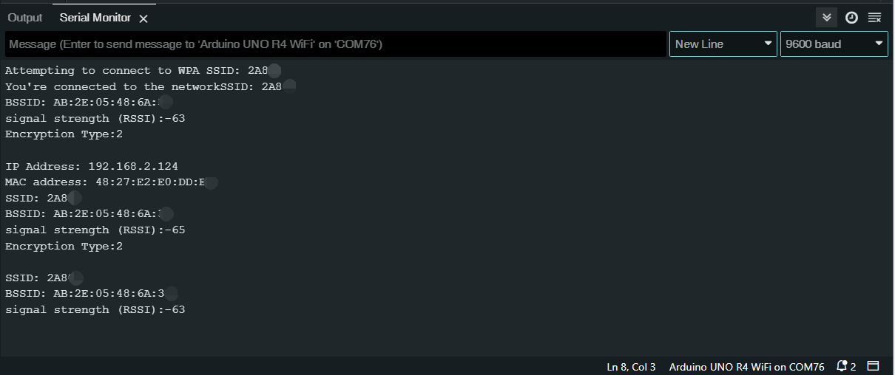

WiFi Connect Test
This tutorial will guide you through the essential steps to connect your Arduino board to a Wi-Fi network. You’ll learn how to initialize the Wi-Fi module, verify its firmware, and securely join a network using its SSID and password. Once connected, you’ll discover how to monitor important network details like your device’s IP and MAC addresses, as well as the network’s signal strength, directly from the serial console. This tutorial serves as both a practical guide to Wi-Fi connectivity and an introduction to network monitoring with Arduino, helping you establish and maintain a reliable Wi-Fi connection.
1. Upload the code
Open the 16_WiFi_Connect_Test.ino file under the path of Basic-Starter-Kit-for-Arduino-Uno-R4-WiFi-main\Code, or copy this code into Arduino IDE.
Note
Wi-Fi® support is enabled via the built-in WiFiS3 library that is shipped with the Arduino UNO R4 Core. Installing the core automatically installs the WiFiS3 library.
You still need to create or modify arduino_secrets.h, replace SECRET_SSID and SECRET_PASS with the name and password of the wifi you want to connect to. The file should contain:
//arduino_secrets.h header file
#define SECRET_SSID "yournetwork"
#define SECRET_PASS "yourpassword"
Open the serial monitor, and you will see similar content as follows. Arduino will output your device’s IP and MAC addresses, as well as the network’s signal strength.
{kind=link}
2. Code explanation
Including Libraries and Secret Data
#include <WiFiS3.h> #include "arduino_secrets.h"
WiFiS3is a library that provides functions for Wi-Fi connectivity. Installing the R4 core automatically installs the WiFiS3 library.arduino_secrets.his a separate file where you keep your SSID and password so they’re not exposed in your main code. Storing network and password separately reduces accidental sharing of Wi-Fi credentials.
Declaring Global Variables
char ssid[] = SECRET_SSID; char pass[] = SECRET_PASS; int status = WL_IDLE_STATUS;
ssidandpasscontain your network name and password.statuswill store the current status of your Wi-Fi connection.
setup()FunctionThe Serial interface is initialized with a baud rate of 9600. The
while (!Serial);line makes sure that the program waits until the Serial connection is established.void setup() { //Initialize serial and wait for port to open: Serial.begin(9600); while (!Serial) { ; // wait for serial port to connect. Needed for native USB port only } ... }
And then, the code checks whether the Wi-Fi module is available or not. If not, the program will halt, effectively stopping any further execution.
... // check for the WiFi module: if (WiFi.status() == WL_NO_MODULE) { Serial.println("Communication with WiFi module failed!"); // don't continue while (true); } ...
In this part of the code, we check if the firmware version of uno R4 wifi is up to date. If it is not the latest version, a prompt for upgrade will be displayed. You can refer to update_firmware for firmware upgrade.
... String fv = WiFi.firmwareVersion(); if (fv < WIFI_FIRMWARE_LATEST_VERSION) { Serial.println("Please upgrade the firmware"); } ...
loop()Functionvoid loop() { // check the network connection once every 10 seconds: delay(10000); printCurrentNet(); }
Every 10 seconds, the function
printCurrentNet()is called to print the current network details.
Reference